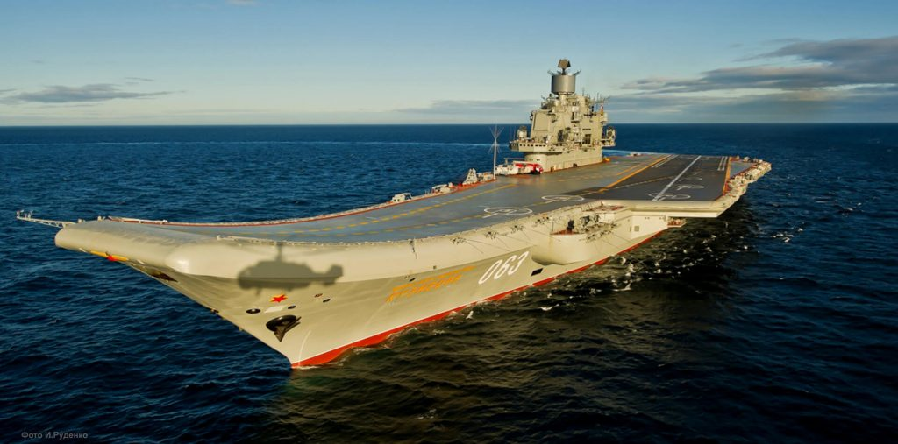
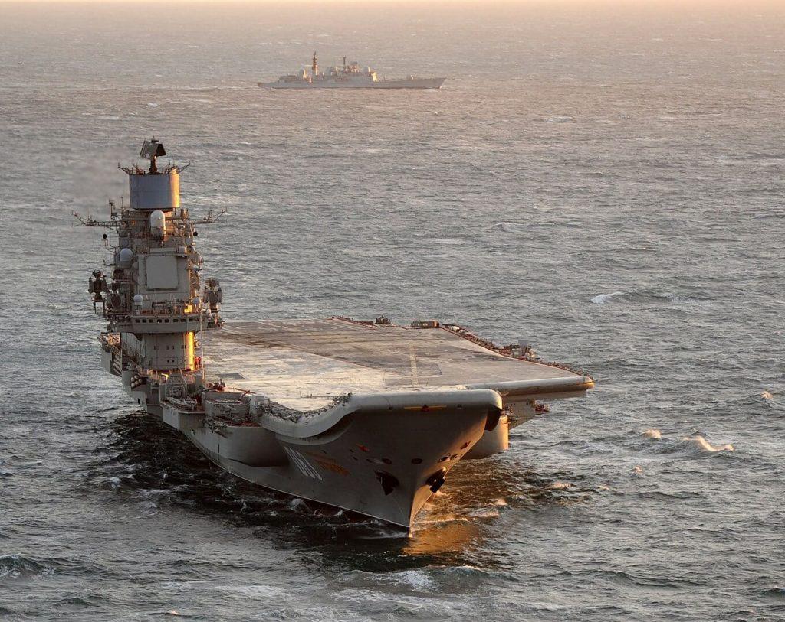
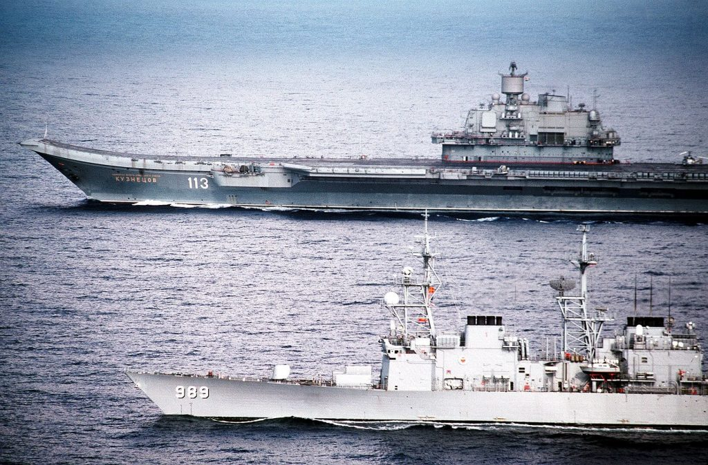
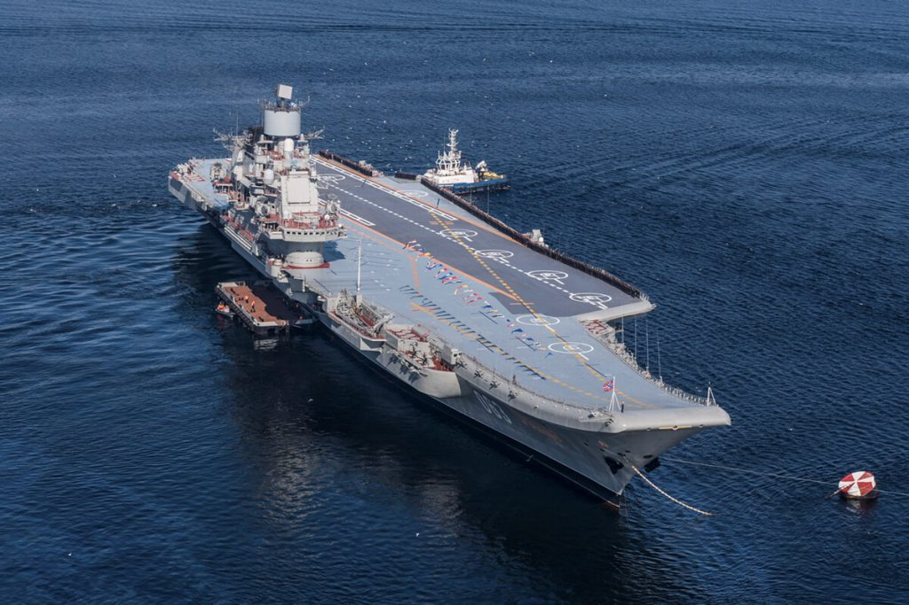
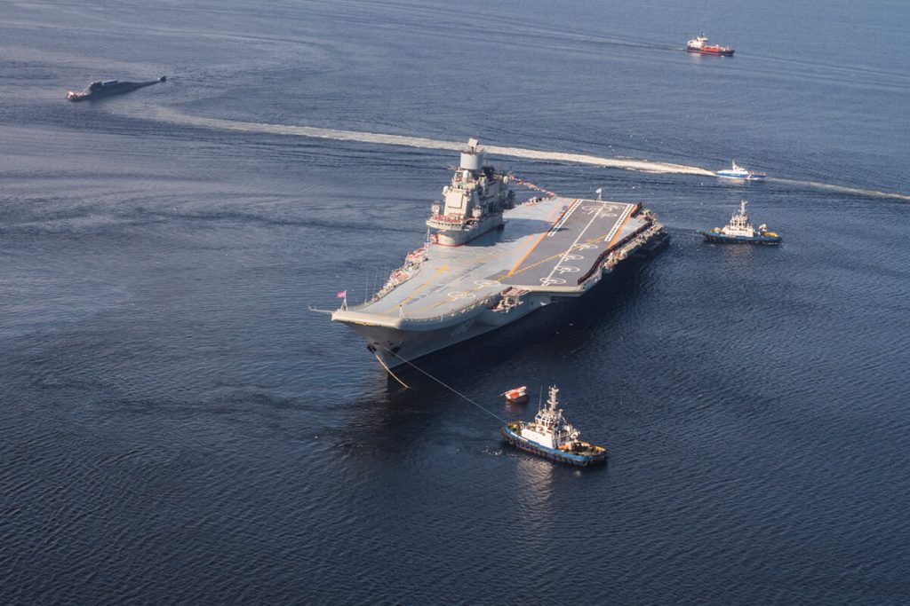
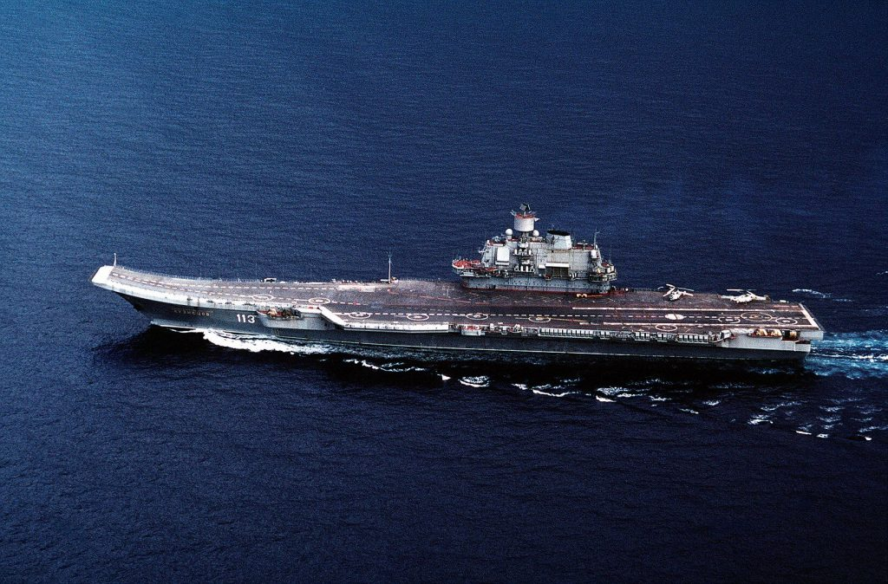
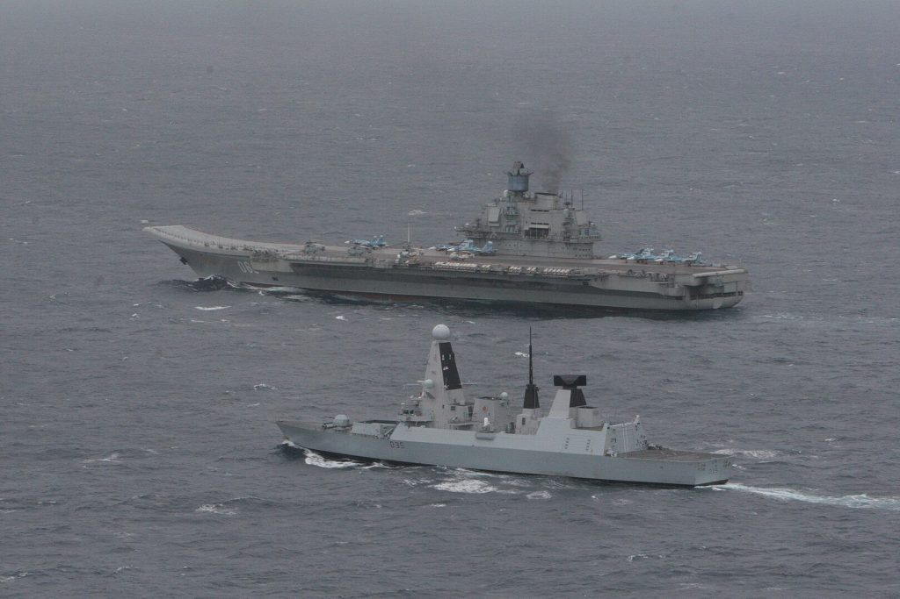
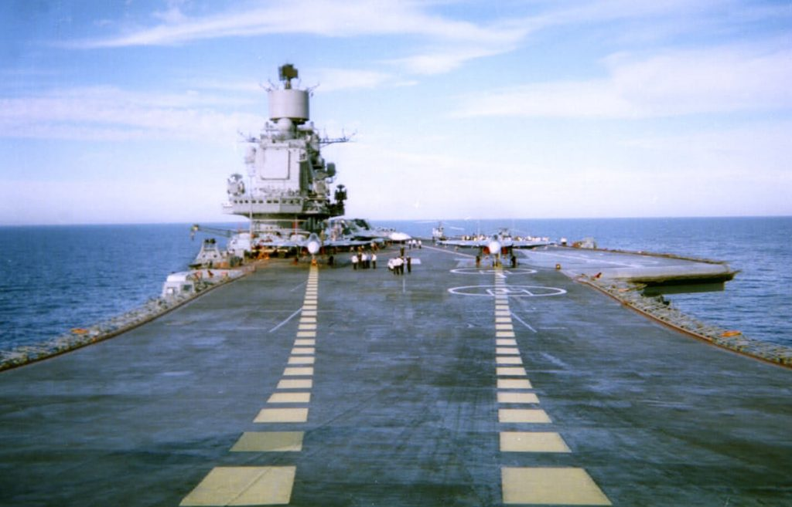
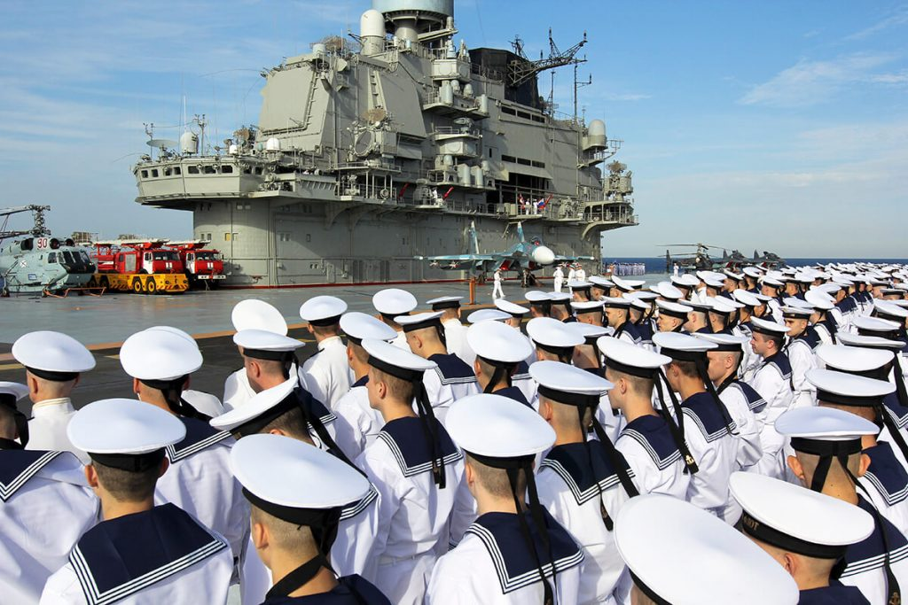
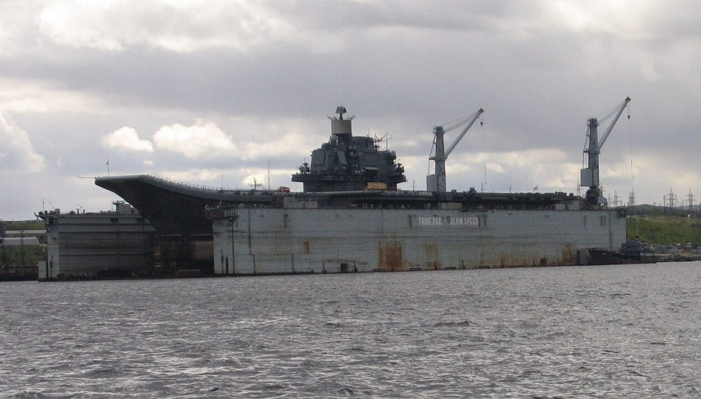

ဒီလေယာဉ်တင် သင်္ဘောကြီးက ရုရှားရေတပ် အတန်းအစား ခွဲခြားမှု Classification အရတော့ အကြီးစား လေကြောင်း ခရူဇာ (heavy aviation cruiser) စစ်သင်္ဘောကြီး ဖြစ်ပါတယ်။ ဒီလေယာဉ်တင် သင်္ဘောကြီးရဲ့ အမည်က ရေကြောင်းဗိုလ်ချုပ်ကြီး ကူးဇ်နက်ဇော့ဗ် (Admiral Kuznetsov) ဖြစ်ပါတယ်။ ဒီသင်္ဘောကြီးကို ၁၉၈၀ ပြည့်နှစ်တွေ ကတဲက တည်ဆောက်ခဲ့တာ ဖြစ်ပါတယ်။ သူ့ကို ဒီဇိုင်းဆွဲထားတာက အမေရိကန် လေယာဉ်တင် သင်္ဘောတွေနဲ့ မတူညီတဲ့ တာဝန်တွေကို ထမ်းဆောင်နိုင်အောင် ဒီဇိုင်းဆွဲထားတာ ဖြစ်ပါတယ်။ သူ့ကို အကြီးစား ဒုံးကျည်တင် ခရူဇာ တိုက်သင်္ဘောကြီး (heavy missile cruiser) အဖြစ်ရော လေယာဉ်တင် သင်္ဘော (aircraft carrier) အဖြစ်ပါတ နှစ်မျိုးလုံး သုံးနိုင်အောင် တည်ဆောက်ထားတာ ဖြစ်ပါတယ်။ ဒါ့ကြောင့်လဲ သူ့မှာ တင်ဆောင်နိုင်တဲ့ လေယာဉ်အရေအတွက်ဟာ အမေရိကန် လေယာဉ်တင် သင်္ဘောတွေနဲ့ ယှဉ်ရင် အလွန်ကို နဲပါးပါတယ်။ ဒါပေမယ့် တာဝေး ပစ်ခတ်နိုင်တဲ့ P-700 Granit အတွဲလိုက်ပစ် သင်္ဘောဖျက် ဒုံးကျည် (P-700 Granit salvo launched anti-ship cruise missile) တွေ အမြောက်အများ တင်ဆောင်ထားတာမို့ အဖျက်စွမ်းအားကတော့ ကြီးမားပါတယ်။
Admiral Kuznetsov လေယာဉ်တင် သင်္ဘောကြီးကို ၁၉၉၁ ခုနှစ်မှာ ရေချခဲ့ပါတယ်။ ဒါပေမယ့် ၁၉၉၅ ခုနှစ်လောက်ထိ သေချာ တာဝန်ထမ်းဆောင်နိုင်စွမ်း မရှိခဲ့ပါဘူး။ ၂၀၁၅ ခုနှစ်လောက်အထိ တာဝန်ကို ထမ်းဆောင်ခဲ့ချိန် အတွင်း ပြဿနာပေါင်း များစွာ ဖြစ်ပွားခဲ့ပါတယ်။ ၂၀၁၆ မှာတော့ ဒီ လေယာဉ်တင် သင်္ဘောကြီးဟာ စီးရီးယား စစ်မြေပြင်ကို ချီတက်လို့ လာခဲ့ပါတယ်။ ဒီ စစ်ဆင်ရေး အတွင်းမှာတော့ ကမ္ဘာက ဒီလေယာဉ်တင် သင်္ဘောကြီးကို မျက်ဝါးထင်ထင် မြင်တွေ့ခဲ့ရ ပါတယ်။ လူပြောအများဆုံး ဖြစ်ခဲ့တာကတော့ မီးခိုးမဲကြီးတွေ အူထွက်နေတဲ့ ဓါတ်ပုံတွေပဲ ဖြစ်ပါတယ်။
ဒီ စစ်ဆင်ရေး အတွင်းမှာလဲ ပြဿနာတွေ အများအပြား ကြုံတွေ့ခဲ့ရပါတယ်။ အထင်ရှားဆုံး ပြဿနာ တွေကတော့ တိုက်လေယာဉ် နှစ်စင်း ရှေ့ဆင့် နောက်ဆင့် ၃ ပါတ်အတွင်း ပျက်ကျသွားတဲ့ ဖြစ်စဉ်ပဲ ဖြစ်ပါတယ်။
၂၀၁၇ ခုနှစ်မှာတော့ ဒီသင်္ဘောကြီးကို ပြန်လည် ပြုပြင်ဖို့ ရုရှား ကာကွယ်ရေး ဝန်ကြီးဌာနက ဆုံးဖြတ်လိုက်ပါတယ်။ ဒါပေမယ့် သင်္ဘောကြီး မပြင်ရသေးမီ ပြင်ဆင်ဖို့ တည်ဆောက်ထားတဲ့ လွန်းကျင်ထဲကို တန် ၇၀ အလေးချိန်ရှိတဲ့ ကရိန်းကြီး ပြုတ်ကျပြီး လွန်းကျင်းပျက်စီးသွားပါတယ်။ ဒါတင်မက လွန်းကျင်းထဲ ဆိုက်ကပ်ထားတဲ့ လေယာဉ်တင် သင်္ဘောကြီးရဲ့ ဝမ်းဗိုက်လဲ ပေါက်သွားပါတယ်။ ပျက်စီးတဲ့ အပျက်အစီးဟာ ကြီးမားလွန်းလို့ ပြင်ဆင်စားရိတ်တင် အမေရိကန် ဒေါ်လာ သန်း ၁,၀၀၀ လောက် ကုန်မယ်လို့ ခန့်မှန်းပါတယ်။ ဒီ သန်း ၁,၀၀၀ ထဲမှာ သင်္ဘောကြီးကို ခေတ်မှီလက်နက်နဲ့ အီလက်ထရောနစ် ပစ္စည်းကိရိယာတွေ တပ်ဆင်ဖို့ ကုန်ကျစါးရိတ် မပါသေးပါဘူး။ နောက်ပြီး ရစရာ မရှိအောင် ပျက်စီးသွားတဲ့ လွန်းကျင်ကို လဲပြန်ပြင်ဆင်ရ အုံးပါအုံးမယ်။
ပြဿနာပေါင်း များစွာနဲ့ ကြုံတွေခဲ့ရ ကြုံတွေ့နေရဆဲ Admiral Kuznetsov လေယာဉ်တင် သင်္ဘောကြီးကို အများကတော့ ကမ္ဘာ့ကံအဆိုးဆုံး လေယာဉ်တင် သင်္ဘောကြီး အဖြစ် သတ်မှတ်ကြပါတယ်။ ဒါနဲ့ အားမရသေး လို့ ထင်ပါတယ်။ ၂၀၁၉ ခုနှစ် ဒီဇင်ဘာလထဲမှာ ဒီသင်္ဘောပေါ်မှာ မီးလောင်ကျွမ်းမှု ဖြစ်ပွားခဲ့ပါတယ်။ ဂဟေဆက်ရာက ရှော့ဖြစ်ပြီး မီးလောင်တာ ဖြစ်ပါတယ်။ ဒီဖြစ်စဉ်ကြောင့် ၂ ယောက် သေဆုံးပြီး ၁၄ ဦး ဒါဏ်ရာရရှိခဲ့ပါတယ်။ ဒီမီးကြောင့် ပျက်စီး ဆုံးရှုံးမှုကလဲ အမေရီကန် ဒေါ်လာ တစ် ဘီလီယံ (သန်းတစ်ထောင်) ခန့်ရှိလိမ့်မယ်လို့ ခန့်မှန်းကြပါတယ်။
ဒီမီးလောင်မှု ဖြစ်ပြီးတဲ့နောက် ဒီလေယာဉ်တင် သင်္ဘောကြီးကို ပြန်လည် ပြင်ဆင်ဖို့ ကြိုးစားတာနဲ့ ပါတ်သက်လို့ မေးခွန်းထုတ်မှုတွေ ပေါ်ထွက်လို့ လာပါတယ်။ ဒီသင်္ဘောကြီးကို ပြန်ပြင်ဖို့ ကြိုးစားတာထက် အသစ်တစ်စင်း ထပ်ဆောက်တာကမှ ရေရှည်မှာ ကုန်ကျစားရိတ်နဲ့တွက်ချေကိုက်မယ်ဆိုတဲ့ ပြောဆိုမှုတွေ ပေါ်ထွက်လာပါတယ်။ နောက်ပြီး ရုရှားရေတပ် အနေနဲ့ ကုန်ကျစားရိတ် အလွန်ကြီးမားတဲ့ လေယာဉ်တင် သင်္ဘောကြီးတွေ တကယ် လိုရဲ့လား ဆိုတဲ့ မေးခွန်းတွေလဲ ပေါ်ထွက်လို့ လာပါတယ်။
ဒီလို ဝေဖန်မှုတွေ ပေါ်ထွက်လို့ လာပေမယ့်လဲ ရုရှား အစိုးရကတော့ Admiral Kuznetsov လေယာဉ်တင် သင်္ဘောကြီးဟာ ၂၀၂၃ ခုနှစ်ဆန်းမှာ ပြန်လည်ပြီး တာဝန်ထမ်းဆောင် နိုင်လိမ့်မယ်လို့ ပြောပါတယ်။ ရုရှား အစိုးရနဲ့ တပ်မတော် အတွင်းက အကြီးအကဲ များဟာ ဒီ Admiral Kuznetsov လေယာဉ်တင် သင်္ဘောကြီးကို နိုင်ငံ့ဂုဏ်ဆောင် အနေနဲ့ သတ်မှတ်ထားတာမို့ ဘယ်လောက်ပဲ ကုန်ကျစားရိတ် များများ ပြန်လည်ပြီး ပြုပြင်မှုတွေ ပြုလုပ်သွားမယ်လို့ ယူဆရ ပါတယ် ခင်ဗျား။









